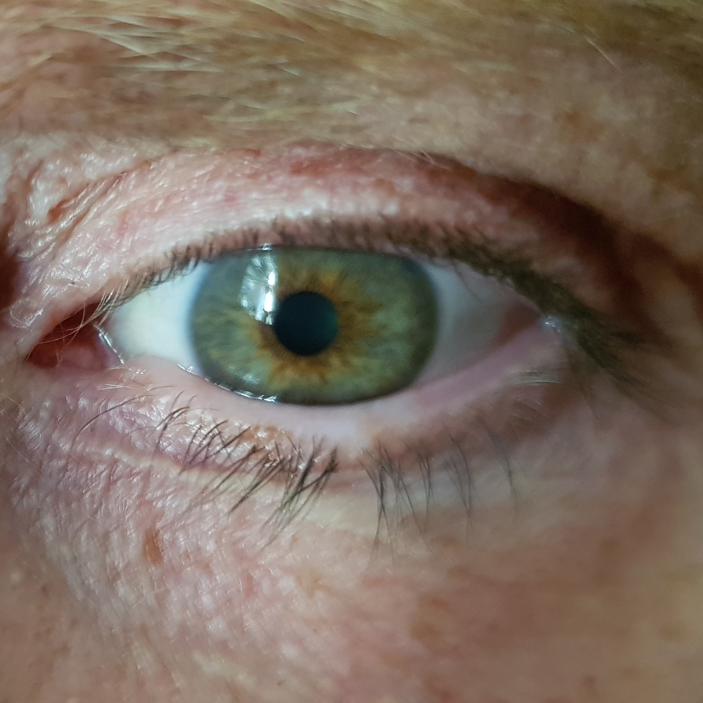

Q1. Qual fenótipo de PS combina com salva?
Caso clínico
Facada no olho e o homem que grita
Bar, álcool, madrugada — facada periorbitária e grito no PS. Reconhecer salva.
TAC e protótipo
Salva = capítulo das cefaleias trigêmino-autonômicas (TAC); é o protótipo. Outras: hemicrania paroxística e SUNCT/SUNA. Nas TACs, a qualidade da dor é semelhante; mudam duração e recorrência/dia.
Homem + álcool
Epidemiologia: predomínio em homens — estimativa clássica de cerca de 9 homens : 1 mulher. Gatilho clássico: álcool. Mini-cena: eliminação na Copa, bar, “afogar as mágoas” → madrugada com salva (bebe, dorme, acorda com a dor).
Facada periorbitária
Dor unilateral periorbitária, em facada / “furador de gelo”, insuportável. Pode acordar o paciente.
Comportamento no PS
Enxaqueca fica quieta (luz/barulho atrapalham); tensional leve–moderada até ajuda a empurrar a maca; salva grita/desespera na emergência.
Autonômicos ≥ 1
Pelo menos um sintoma autonômico ipsilateral: hiperemia conjuntival, lacrimejamento, congestão nasal, miose, ptose, edema palpebral. O conjunto dor fortíssima + autonômico torna a salva peculiar.
Tempos
Crise: 15–180 minutos. Frequência: 1–8/dia. Mesmo 15 min de dor insuportável não se menospreza. Rara na prática, mais presente na prova.
Bordão
Facada no olho, homem, álcool, O₂. O oxigênio completa o mnemônico, mas o reconhecimento começa pelo fenótipo.

T. Bjornstad. Cluster headache attack photo. Wikimedia Commons 2018 — CC BY-SA 4.0 · fonte
Salva tem cara e tem cheiro
Foto de crise: hiperemia e injeção conjuntival ipsilateral ao lado da dor. O autonômico é a marca clínica da cefaleia trigêmino-autonômica.
Quiz
Q2. Duração típica da crise de salva: